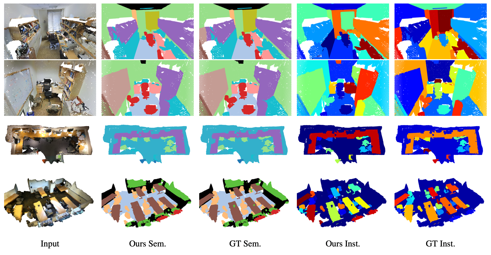
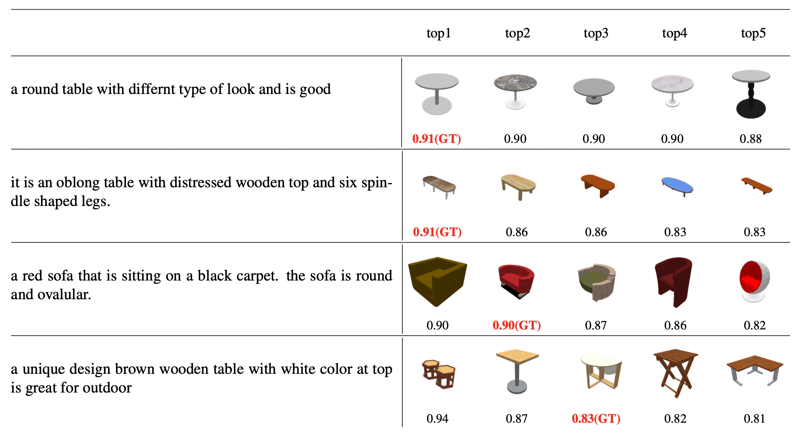

Qualitative Results
Semantic/Instance Segmentation
Figure 2. 3D Segmentation results on S3DIS (top) and ScanNet (bottom) datasets.
Referring Segmentation

Figure 3. Results of grounded segmentation on ScanRefer dataset.
Text-to-Shape Retrieval
Figure 4. Text-to-Shape Retrieval results on Text2Shape dataset, For each query sentence, we show the top-5 ranked shape, the scores of ground truth shape are marked in red.
BibTeX
@article{li2023uni3dl,
title={Uni3DL: Unified Model for 3D and Language Understanding},
author={Xiang Li, Jian Ding, Zhaoyang Chen, and Mohamed Elhoseiny},
journal={arXiv:2310.09478},
year={2023}
}
Acknowledgement
This website is adapted from Nerfies, licensed under a Creative Commons Attribution-ShareAlike 4.0 International License.